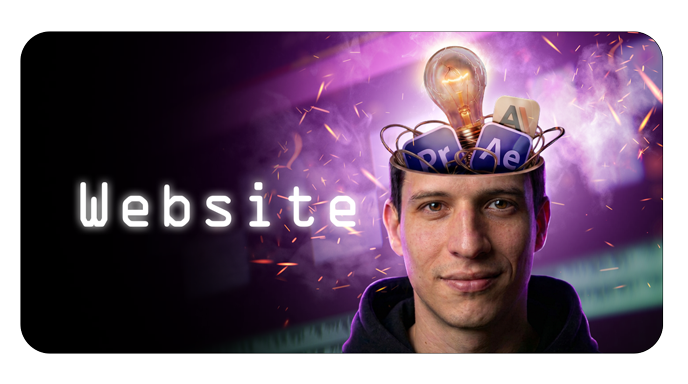
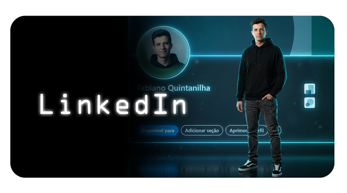
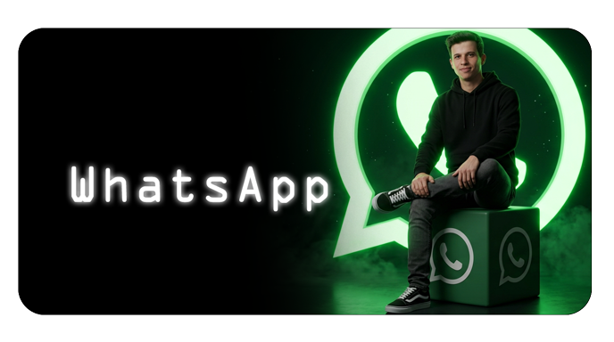

Fabiano Quintanilha
Editor de Vídeo & Marketing Digital



© 2026 Fabiano Quintanilha · fabianoquintanilha.com
Editor de Vídeo & Marketing Digital



© 2026 Fabiano Quintanilha · fabianoquintanilha.com